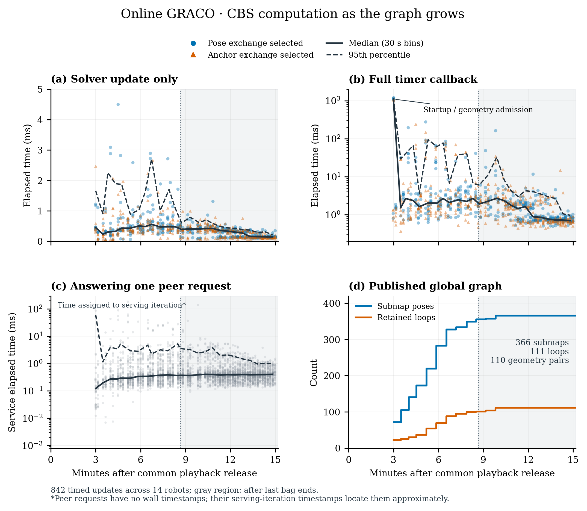
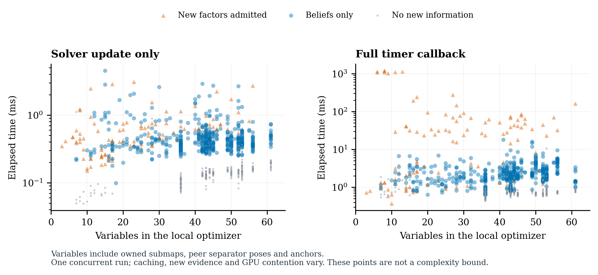
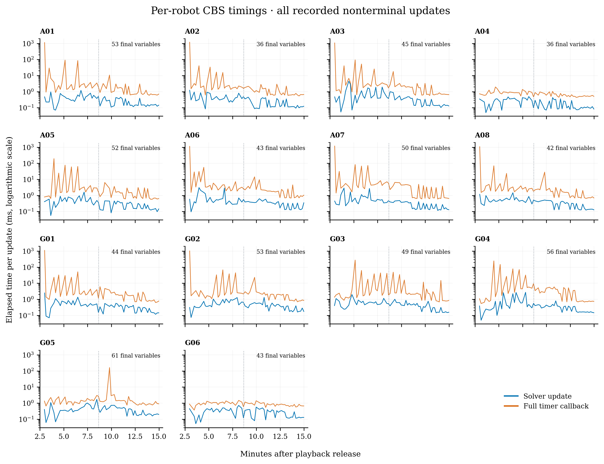

The local solver remained inexpensive as the published global graph grew from 72 to 366 submap poses and from 22 to 110 admitted GPU registration pairs. These are 14 concurrent local optimizers, not one solver containing the whole global graph. The largest recorded local estimate has 61 variables.
Across 842 recorded nonterminal updates, solver wall time was 0.351 ms median, 1.003 ms at the 95th percentile and 4.499 ms maximum. Full timer callbacks were 1.629 / 32.230 / 1188.685 ms respectively. The callback includes lock waiting, successful input preparation/admission, registration preparation, the solver update, residual/statistics evaluation, asynchronous request submission and visualization. A callback returning before performing an update is not in this CSV.



The 3,930 logged peer-service responses took 0.379 ms median, 2.385 ms at the 95th percentile and 190.248 ms maximum. These include request-lock waiting, cavity marginalization and response packing. They are separate from the update callback and are not summed into a fictitious synchronized global cycle.
All times are elapsed wall time, not CPU time or a GPU kernel microbenchmark. GPU work can be charged to different enclosing calls; the full callback and peer-service measurements are the broader scopes. Waiting for asynchronous peer replies, DDS delivery, separate PCM/exchange callbacks and Python bridge preparation are not a complete end-to-end latency measurement here.
Update timestamps come from the matching robot/iteration statistics receipt. Peer-service CSV rows contain only an iteration number, so their plotted times are assigned to the serving robot’s iteration timestamp, approximately locating each request within that iteration. Requests before iteration 1 have no matching timestamp and appear only in the retained data and duration statistics. Duration measurements are native steady-clock measurements. One terminal timer callback per robot is missing by design and is never filled with zero; the final geometry-validation cost is therefore not covered by these update maxima.
The actual recorded configuration selects outgoing pose or anchor exchange randomly at each iteration. It does not strictly alternate. Both categories run the local optimizer; the labels describe the exchange selected after the update, not two independent solver kernels. Earlier report wording has been corrected.
Gray shading marks time after the last bag ended. The late decrease in cost occurs while the graph is fixed and fewer new beliefs/factors arrive; it does not imply that larger graphs are intrinsically cheaper. The recorded solver updates show no growth-related bottleneck at this tested size, but this is not a controlled asymptotic scalability experiment or a Jetson benchmark.
| Robot | Submaps | Variables | Geometry pairs | Update P50 / P95 / max (ms) | Callback P95 / max (ms) |
|---|---|---|---|---|---|
| aerial01 | 31 | 53 | 8 | 0.262 / 0.771 / 1.194 | 29.464 / 1132.036 |
| aerial02 | 15 | 36 | 7 | 0.297 / 0.864 / 1.223 | 17.376 / 1188.287 |
| aerial03 | 22 | 45 | 10 | 0.363 / 1.889 / 4.499 | 41.290 / 1074.470 |
| aerial04 | 22 | 36 | 0 | 0.172 / 0.421 / 0.494 | 1.261 / 1.952 |
| aerial05 | 30 | 52 | 8 | 0.339 / 0.817 / 1.616 | 60.817 / 194.835 |
| aerial06 | 19 | 43 | 13 | 0.375 / 1.571 / 3.094 | 29.331 / 1141.452 |
| aerial07 | 24 | 50 | 12 | 0.364 / 1.162 / 2.884 | 68.227 / 1188.685 |
| aerial08 | 21 | 42 | 7 | 0.392 / 0.873 / 1.477 | 23.837 / 1080.341 |
| ground01 | 23 | 44 | 9 | 0.359 / 0.852 / 2.477 | 30.242 / 1103.539 |
| ground02 | 30 | 53 | 10 | 0.395 / 1.057 / 1.316 | 38.787 / 1024.490 |
| ground03 | 24 | 49 | 11 | 0.455 / 1.007 / 1.979 | 43.858 / 275.642 |
| ground04 | 30 | 56 | 13 | 0.341 / 2.238 / 2.716 | 70.701 / 244.848 |
| ground05 | 46 | 61 | 2 | 0.364 / 0.884 / 1.716 | 2.920 / 163.199 |
| ground06 | 29 | 43 | 0 | 0.303 / 0.511 / 0.722 | 1.317 / 1.477 |
Geometry-pair counts are the accepted pairs reported by each native adapter, not all pairs touching that robot.
All update rows · Peer-service rows · Per-robot CSV · Summary and validation · Original counters and hashes · Reproduction script